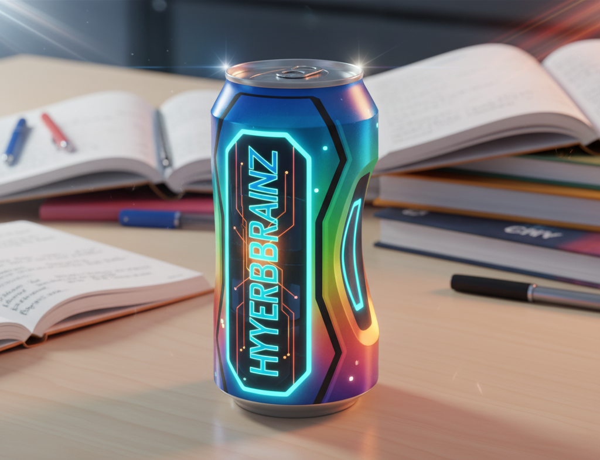

<!-- Article -->
<div class="lg:col-span-2">
  <article class="bg-white rounded-lg shadow-md p-6 space-y-4">
    

    <h2 class="text-2xl font-bold mb-4">Les coulisses d’HyperBrainZ : enquête sur la boisson qui promet l’intelligence</h2>

    <p>Dans un précédent article, nous évoquions l’annonce tonitruante affirmant qu’<em>HyperBrainZ™</em> pourrait augmenter le QI des adolescents de 300 %. Malgré cette promesse digne d’un film de science-fiction, beaucoup de zones d’ombre demeurent. Retour sur l’envers du décor d’une boisson qui attire autant qu’elle inquiète.</p>

    <h3 class="text-xl font-semibold mt-6">Une start-up brillante… surtout en communication</h3>
    <p>HyperBrainZ est commercialisée par <strong>NeuroBoost Corp</strong>, une jeune entreprise suisse présentée comme « pionnière des neurosciences appliquées ». Si la marque revendique dix années de recherche approfondie, aucune publication scientifique vérifiable n’a été retrouvée dans les bases de données académiques.</p>
    <p>Sur leur site, le nom d’un mystérieux neurologue fondateur est mentionné, mais aucune trace n’existe dans les revues spécialisées. Les seules preuves mises en avant sont des images colorées simulant des IRM et des graphiques impossibles à interpréter.</p>

    <h3 class="text-xl font-semibold mt-6">Des ingrédients « neuroactifs »… ou juste très sucrés ?</h3>
    <p>La boisson vante la présence de <strong>« nano-molécules neuroactives »</strong>, un terme inexistant dans la littérature scientifique. Interrogée, l’entreprise évoque un « secret industriel ». Une analyse indépendante révèle cependant un mélange principalement constitué de <strong>caféine, taurine, sucre et arômes artificiels</strong>, proche des boissons énergisantes classiques.</p>
    <p>Rien ne démontre l’existence d’une substance capable de multiplier l’intelligence humaine.</p>

    <h3 class="text-xl font-semibold mt-6">Une communication virale, calibrée pour les jeunes</h3>
    <p>Si la science peine à répondre, la stratégie marketing, elle, fonctionne à merveille. La marque sponsorise massivement des créateurs sur TikTok et Instagram. Le défi <strong>#HyperBrainZChallenge</strong>, consistant à boire une canette avant un contrôle, dépasse les 30 millions de vues.</p>
    <p>Capsules dynamiques, musique électrisante, promesse de « réviser deux fois plus vite » : tout est conçu pour séduire un public adolescent en quête de performance.</p>

    <h3 class="text-xl font-semibold mt-6">Les scientifiques appellent à la prudence</h3>
    <p>« Les résultats annoncés sont scientifiquement absurdes », estime le Pr. <strong>Élise Morel</strong>, neuropsychologue à Lyon. Aucun test en double-aveugle, aucune méthodologie claire, aucun groupe témoin. Rien ne permet de confirmer les performances cognitives promises.</p>
    <p>L’<strong>EFSA</strong> rappelle que des taux élevés de caféine peuvent provoquer <em>palpitations, anxiété et troubles du sommeil</em>, particulièrement chez les mineurs. Une boisson présentée comme miracle pourrait donc cacher des risques bien réels.</p>

    <h3 class="text-xl font-semibold mt-6">Révolution intellectuelle ou simple coup marketing ?</h3>
    <p>HyperBrainZ n’a peut-être pas encore prouvé qu’elle développe l’intelligence, mais elle dynamise incontestablement les ventes. En jouant sur le rêve de performance immédiate, la marque exploite les codes de la viralité et de la pseudo-science pour convaincre plutôt qu’informer.</p>
    <p>Au-delà du phénomène, une question persiste : <strong>cherchons-nous à booster les neurones… ou simplement à booster le marché ?</strong></p>

    <div class="notice bg-yellow-50 border border-yellow-200 text-yellow-800 p-4 rounded">
      ⚠️ <strong>Notice pédagogique :</strong> Cet article est fictif. Il sert d’exercice de sensibilisation aux mécanismes de désinformation et à l’analyse critique des sources.
    </div>
  </article>
</div>
